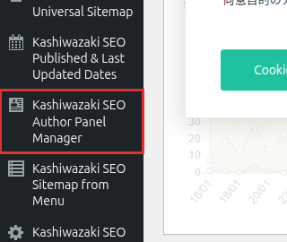
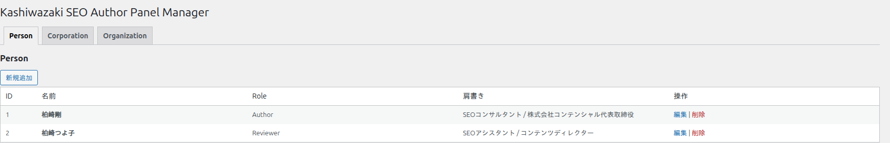

インストール・初期設定
プラグインのインストール、管理画面の場所、3 テーブルの自動生成、初期登録の手順までを順番に解説します。
インストール方法
GitHub からダウンロードした wp-plugin-kashiwazaki-seo-author-panel-manager ディレクトリ一式を /wp-content/plugins/ にアップロードします。
WordPress 管理画面 「プラグイン」 → 「インストール済みプラグイン」 から 「Kashiwazaki SEO Author Panel Manager」 を 有効化 します。有効化時に register_activation_hook で KAPM_Database::create_tables() が走り、3 つのカスタムテーブルが自動生成されます。
管理画面左サイドバーに 「Kashiwazaki SEO Author Panel Manager」（dashicons-id-alt アイコン）が追加されます。メニューの表示位置は 81 番（WordPress 標準メニューの下、カスタムメニュー上部付近）です。

インストール済みプラグイン画面では、本プラグインのエントリに「設定」リンクが表示されます（plugin_action_links_ フィルタで追加）。クリックすると admin.php?page=kapm（Person タブ）に直接移動します。
生成される 3 つのカスタムテーブル
プラグイン有効化時、dbDelta() を通じて以下の 3 テーブルが作成されます。すべて独立したテーブルで、WordPress の wp_users / wp_posts とは関連付きません。エンティティ ID は各テーブルで独立して採番されます。
| テーブル名 | 主なカラム数 | 用途・保存内容 |
|---|---|---|
{prefix}apm_persons |
11 | 個人エンティティ。name / name_en / role / job_title / bio / image_url / url / same_as / panel_style / created_at |
{prefix}apm_corporations |
10 | 企業エンティティ（Corporation 型）。description / logo_url / url / same_as 等 |
{prefix}apm_organizations |
10 | 組織エンティティ（Organization 型）。カラム構成は Corporation と同一 |
{prefix} は通常 wp_ です（wp-config.php で変更している場合はそちらに準拠）。完全なカラム定義と型は トラブルシューティングの DB スキーマ表を参照してください。
3 テーブルとも PRIMARY KEY (id) のみです。エンティティ件数は通常数十件以下を想定しており、追加インデックスは設定していません。
管理画面の構成
管理画面（admin.php?page=kapm）は、上部のタブナビゲーションで Person / Corporation / Organization の 3 タブを切り替える構成です。各タブは一覧表示 → 新規追加／編集フォーム → 保存 という一般的な WP 管理画面の流れです。

初期設定の流れ
Person タブで「新規追加」をクリックし、記事執筆者・レビュアー等の個人エンティティを登録します。最低限「名前」のみ必須。英語名・肩書き・自己紹介・画像・URL・sameAs は任意です。
必要に応じて Corporation タブで運営会社・発行元などを登録し、Organization タブで研究機関・運営メディアなど非営利組織を登録します。3 種類は混在させずに正しいタブへ登録してください（Schema.org の型が異なるため）。
各エンティティには パネルデザイン（default / dark / accent / minimal / card の 5 種）を個別設定できます。記事によって異なるデザインで表示したい場合は、同じエンティティを複数登録して使い分けるか、ブロック／ショートコード側でラベルを指定してください。
記事への挿入は Gutenberg ブロック（ブロック追加メニューで「著者」「author」で検索）または ショートコード [author_panel persons="1,2" corporations="1"] のいずれかで行います。詳細は ショートコード＆ブロックページを参照してください。
パネルデザイン一覧
各エンティティ編集画面の「パネルデザイン」セレクトから選択します。CSS は public/css/panel-style.css（実測 4,629 バイト）で定義されており、JavaScript は使用しません。
| value | CSS クラス | 見た目の特徴 |
|---|---|---|
default | .kapm-style-default | グレー背景 #f9f9f9、細ボーダー、角丸 6px。既定 |
dark | .kapm-style-dark | ダーク背景 #2b2d42、水色アクセント。WCAG AA コントラスト比準拠 |
accent | .kapm-style-accent | 白背景、左端 4px の青アクセントバー |
minimal | .kapm-style-minimal | 背景・ボーダー無し、下線のみのミニマル表示 |
card | .kapm-style-card | 白背景 + 10px 角丸 + シャドウの「カード」表示 |
各デザインの詳細な CSS 仕様（配色・境界線・適用例）は エンティティ管理ページにまとめています。
保存・削除のセキュリティ概要
管理画面の保存・削除処理は、すべて nonce 検証と capability チェックで保護されています。通常の利用で意識する必要はありませんが、カスタマイズやトラブルシューティング時は以下の点に注意してください。
- 管理画面表示と保存・削除は
current_user_can('manage_options')（管理者ロール相当）が必須 - 保存時の nonce アクション:
kapm_save_person/kapm_save_corporation/kapm_save_organization - 削除時の nonce アクション:
kapm_delete_person/kapm_delete_corporation/kapm_delete_organization - ブロックエディタからの REST API 呼び出しは別扱いで
current_user_can('edit_posts')（投稿者以上）
全 6 種類の nonce アクション名と送信元は トラブルシューティングの nonce 一覧で確認できます。
メニュー情報サマリー
| 項目 | 値 |
|---|---|
| 管理ページスラッグ | kapm（admin.php?page=kapm） |
| メニュー表示位置 | 81（add_menu_page の position 引数） |
| メニューアイコン | dashicons-id-alt（ID カードアイコン） |
| 管理画面権限 | manage_options |
| タブ切替 URL クエリ | &tab=person / &tab=corporation / &tab=organization（既定は person） |
国際化（i18n）の現状
本プラグインの Text Domain ヘッダーは kashiwazaki-seo-author-panel-manager、Domain Path ヘッダーは /languages が宣言されています。PHP 側の管理画面 UI 文字列の多くは __() / esc_html__() / esc_attr__() / esc_html_e() / esc_attr_e() 経由で出力されており、翻訳関数のフックポイント自体は存在します。
v1.0.0 の実装には load_plugin_textdomain() の呼び出しがなく、wp_set_script_translations() によるブロックエディタ JS への翻訳連携もありません。加えて、以下の箇所は翻訳関数を通っておらず日本語文字列がハードコードされています:
- Gutenberg ブロックエディタ (
assets/js/gutenberg-sidebar.js) の UI 文字列全般 (パネルタイトル、プレースホルダ、アイコン等) - パネルデザイン選択肢のラベル (
admin/views/_panel-style-select.php) - 一部のインライン説明文
他言語環境で運用したい場合、現時点では load_plugin_textdomain() の追加、JS 文字列の wp.i18n API 化、ハードコード文字列の翻訳関数化をコード側で行うフォーク対応が必要です。
GitHub リポジトリと更新
| 項目 | 値 |
|---|---|
| リポジトリ | github.com/TsuyoshiKashiwazaki/wp-plugin-kashiwazaki-seo-author-panel-manager |
| マニュアル URL（このページ） | tsuyoshikashiwazaki.github.io/wp-plugin-kashiwazaki-seo-author-panel-manager |
| 更新履歴 | リポジトリ内の CHANGELOG.md |
| ライセンス | GPL-2.0+ |
| 作者プロフィール | 柏崎剛（Tsuyoshi Kashiwazaki） |
プラグイン本体のアップデートは現状 GitHub から手動ダウンロード → /wp-content/plugins/ への上書きで行います。WordPress.org プラグインディレクトリ経由の自動更新は未提供です。